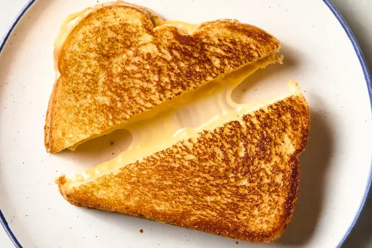

Home
Cheese Sandwich

Description
Cheese Sandwich is a simple & basic sandwhich made by placing cheese in between 2 buttered slices of bread. These sandwhiches are either grilled or toasted until the cheese melts. There are so many varieties of grilled cheese made across the world with varying ingredients.
Ingredients
- Bread
- Butter
- Cheese
- Black Pepper
- Red Chilli
- Oregano
Steps
- Add 1 to 2 teaspoons of butter to a hot pan and melt it. Spread it with a spatula wben it melts. Place the bread slices over the melted butter. You can also smear the softened butter over the slices. If your butter isn't soft, then you can add it to the hot pan. You can use as much as butter as you like.
- Toast the bread slices until golden on one side of both the slices.
- Flip one of them and place 2 cheese slices or grated cheese on the hot toasted side. Sprinkle the flavorings you prefer like black pepper, red chilli flakes and oregano. Place the golden toasted side over the cheese. Place the cheese over the toasted hot bread helps the cheese to melt fast.
- Add some more butter to the pan. Flip with a spatula and toast on both the sides on a very low heat until the cheese melts off. Take care not to burn. Halve the grilled sandwich and serve hot or warm.